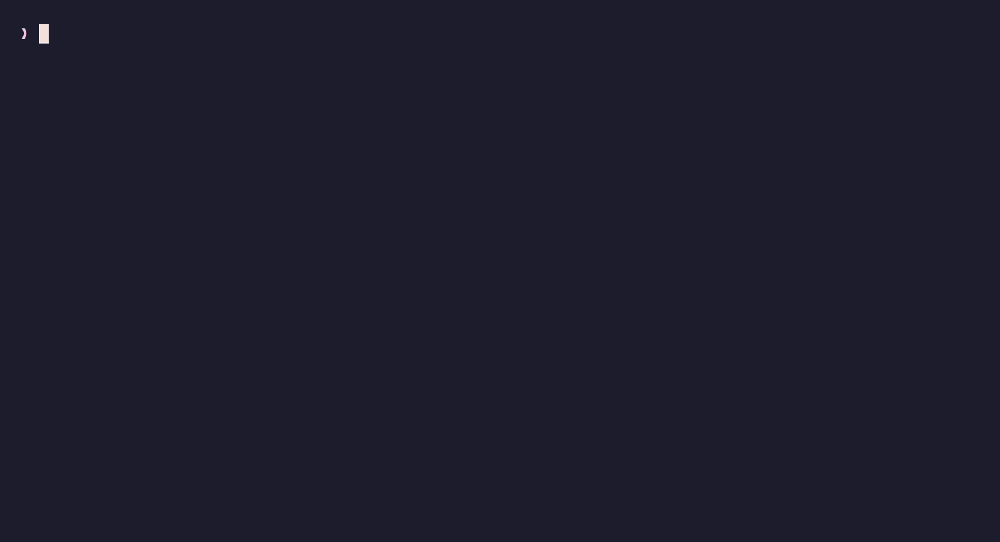
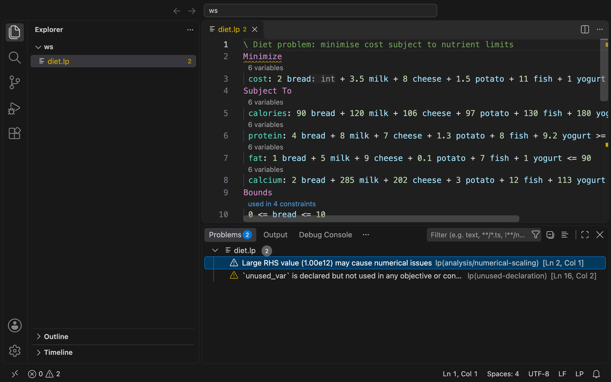

lp_parser_rs
a real grammar for optimisation models
Parse, analyse, diff, convert and solve LP and MPS files from the terminal, Python and your editor, all on one typed model.
← → topics · ↓ ↑ go deeper within a topic · Space steps through everything · S notes · O overview · F fullscreen · docs site
Optimisation models are code we can't read
Everywhere
PuLP, Pyomo, JuMP, OR-Tools and in-house generators all emit LP or MPS files. CPLEX, Gurobi, Xpress, HiGHS and CBC all read them.
Opaque
Files run to millions of lines. Review means less and grep. Plain diff drowns in reordering noise.
Late feedback
A typo or a badly scaled coefficient surfaces only when the solver rejects it, or quietly solves the wrong problem.
We have linters, formatters, diff tools and language servers for every language we write, except the one that encodes our business decisions.
Small language, many dialects
\ Weekly production plan for two plants Maximize profit: 12 chairs + 18 tables + 30 desks - 4 overtime Subject To wood: 2 chairs + 5 tables + 8 desks <= 400 labour: chairs + 2 tables + 3 desks - overtime <= 160 open_b: build_b = 1 -> tables + desks >= 10 Bounds 0 <= overtime <= 40 Generals chairs tables desks Binaries build_b End
Hover a line
Each construct has rules that differ subtly between CPLEX, Gurobi, Xpress and Mosek.
- Context-sensitive:
x[1]is a name,[ x ^ 2 ]is a quadratic term - Keywords are case-insensitive and have many spellings
- Implicit declaration: typos create new variables silently
Regex works until it doesn't
Ad-hoc scripts
- Split on whitespace, hope for the best
- Break on line continuations, comments, odd names
- No error positions: "something is wrong somewhere"
- Every team rewrites one, each slightly differently
A formal grammar
- One specification of the language, reviewed and tested
- Exact line and column errors with a caret
- A typed model (objectives, constraints, bounds, types) every tool shares
- Round-trip: parse → modify → write → parse gives back the same model
// rust/src/lp.lalrpop (excerpt): every bound form, declared once BoundSpec: (&'input str, VariableType) = { // Free variable: "x1 free" <var:"identifier"> "free" => (var, VariableType::Free), // Double bound: "0 <= x1 <= 5" <lb:NumericValue> Le <var:"identifier"> Le <ub:NumericValue> => { (var, VariableType::DoubleBound(lb, ub)) }, … };
One model, many front ends
Click a box to see what it does. Press ↓ for the diagnostics engine every front end shares.
Findings with a code, a certainty and a category
Proven
Exact. A lower bound above its upper bound, an integer with no integer in its bounds, two rows that contradict each other. Always published.
invalid-boundscontradictory-rowsrow-infeasible-by-boundsinteger-no-feasible-values
Heuristic
Smells that are sometimes intended: badly scaled rows, huge coefficients, more equalities than variables. Tunable, or off with one setting.
large-coefficientrow-coefficient-rangerhs-coefficient-ratioequalities-exceed-variables
Rows and structure
Duplicate, proportional and dominated rows, unused and fixed variables, empty rows, opposed objectives, indicator variables that are not binary, trivial SOS sets.
duplicate-rowdominated-rowunused-variableindicator-not-binary
- 40+ stable codes in four categories: structural, numerical, mathematical, performance. A stable code means CI filters and editor settings keep working across releases
- One call:
problem.diagnostics()in Rust,parser.diagnostics()in Python; the language server publishes the same findings as editor diagnostics - Per-code severity overrides, thresholds and a per-code cap, so one noisy check cannot bury the rest
A complete toolchain, not a weekend parser
tools on one core: CLI, Python, TUI, language server (with VS Code) and a HiGHS helper
coded model diagnostics, most of them proven rather than guessed
lines of Rust across library, LSP, TUI, solver and Python bindings
Rust tests (unit, integration, snapshot), plus Python, VS Code and end-to-end LSP tests
Ask your model questions

Counts of objectives, constraints and variables by type.
Six subcommands, LP or MPS in
| parse | Show the file's structure; --format text|json|yaml, --pretty, -o |
| info | Counts and statistics; --variables --constraints --objectives list every entry |
| analyze | Density, sparsity, coefficient ranges and issues; --issues-only and four tunable thresholds |
| diff | Structural and numeric comparison; --abs-tol, --rel-tol, repeatable --rename |
| convert | lp, mps, csv, json, yaml; --precision, --max-line-length, --compact |
| solve | CBC or GLPK through lp-solvers (binary on PATH); text, json, yaml |
- Format chosen by extension:
.mpsreads MPS, anything else LP -v/-qfor progress or silence- CSV export writes
objectives.csv,constraints.csv,variables.csv - Feature flags keep the binary small:
cli, csv, diff, serde, lp-solvers solverefuses what it cannot represent (several objectives, strict inequalities) rather than dropping it silently
lp_parser convert plan.lp -f mps -o plan.mps lp_parser convert plan.lp -f csv -o ./out lp_parser analyze plan.lp --ratio-threshold 1e5
Model changes as reviewable pull requests
# .github/workflows/model.yml - name: Install lp_parser run: | cargo install --locked lp_parser_rs \ --features cli,diff,serde - name: Generate model run: python build_model.py -o candidate.lp - name: Fail on structural errors # warnings do not fail run: lp_parser analyze candidate.lp --issues-only - name: Show what changed # 2 = failure run: | rc=0 lp_parser diff baseline.lp candidate.lp \ --abs-tol 1e-6 --rename '\[\d+\]$' '[N]' \ --format json --pretty > model_diff.json || rc=$? [ "$rc" -eq 1 ] && echo "::notice::model changed" [ "$rc" -le 1 ]
- Exit codes follow GNU
diff: 0 same, 1 different, 2 failure - Tolerances ignore float noise from regeneration
- Regex renames strip volatile index suffixes so re-indexing is not a "change" (distinct names can merge, so choose patterns carefully)
- JSON output becomes a PR comment or an audit record
- Refactor the generator with confidence: "model identical" is a passing test
Explore, diff and solve interactively
- One file explores; two files diff, LP against MPS if you like
- Coefficient-level side-by-side diff with Δ and %Δ
- Live tolerance cycling and fuzzy search
- Numerical conditioning per file
- Solve with HiGHS and diff the solutions
- Presolve rewrites and conditioning diagnostics
--watchre-diffs as files change
From "something changed" to the exact coefficient
| 1–5, [ ] | Summary · Variables · Constraints · Objectives · Numerics |
| a + - m = | Filter: all, added, removed, modified, renamed |
| o | Ignore coefficient order when matching |
| s | Sort by name, |Δ| or relative Δ |
| t / T | Cycle relative / absolute tolerance (0, 1e-9 … 1e-2): the diff rebuilds live |
| r | Raw source lines of both files, side by side |
| / | Search: fuzzy, r: regex, s: substring, c: content |
| Ctrl+p | Command palette; Ctrl+o / Ctrl+i jumplist |
- Modified constraints align old and new coefficients on the decimal point
- Renames (
--rename) count once, not as add plus remove y/Yyank to the clipboard, over SSH and tmux too (OSC 52)wwrites a CSV report of the diff--summaryprints counts and exits: scriptable- Seven themes, including
high-contrastandcolour-blind;NO_COLORrespected
lp_diff base.lp new.lp --rename '\[\d+\]$' '[i]' \ --abs-tol 1e-6 --watch
Solve, compare, ask "what if"
Ssolves with HiGHS on a background thread: Summary, Variables, Constraints, Log and Duals tabs- Both files: solve each and diff the solutions, with a delta threshold (
t/T) and a changed-only filter (d) Ewhat-if: edit one constraint's right-hand side and re-solve; the comparison is labelledcapacity rhs 200 -> 260and nothing touches diskeinfeasible? an elastic relaxation shows which rows to relaxIIIS: a minimal conflicting set of rows and boundsEscinterrupts a running solve; ahighs.optfile in the working directory sets HiGHS options
Why it matters
A shadow price tells you the marginal value of a constraint at the current solution, but not how far that holds. Moving the bound and re-solving does.
Paired solves run one at a time so the timings are comparable, and the result is cached until an input changes.
Presolve rules you can try one at a time
| Fixed columns → rhs | A fixed variable's term moves to the right-hand side |
| Singleton rows → bounds | 3x <= 12 becomes x <= 4 |
| Bound propagation | Implied bounds from row activity |
| Integer rounding | x <= 3.7 becomes x <= 3 |
| Redundant & forcing rows | Drop rows that never bind; fix pinned variables |
| Empty rows & columns | Dropped or fixed at a preferred bound |
| Row / column scaling | Powers of two, so no rounding error is added |
| Split dense rows what-if | About √n partial sums for an n-term row. Off by default |
| Relax integrality what-if | The LP relaxation: the gap is what optimality costs. Off by default |
- Rules feed each other, so they run to a fixpoint (at most 10 passes)
Enterrewrites file 1 and runs original versus rewritten;wwrites<stem>_presolved.lpllogs what the rewrite removed;Hlogs what HiGHS's own presolve does- All but the two what-ifs preserve the set of optimal solutions
- The honest result is the comparison: some rewrites help a solver, some are neutral, some hurt
Why is this model slow, unbounded or infeasible?
D Diagnostics
Joins the model's structure with the last solve. Three signals: conditioning, density and degeneracy, ranked per row and variable so the log's "200k iterations" points at a constraint.
B Solve profile
The same model under several HiGHS configurations, side by side.
R Ranging
How far each objective coefficient and row activity can move before the basis changes.
U Unbounded ray
Which variables run away, and in what direction.
I IIS
An irreducible infeasible subsystem: a minimal set of conflicting rows and bounds.
w Report
Write any finished pane to <stem>_iis.txt, _ranging.txt, _unbounded_ray.txt or _solve_profile.txt.
The panes run on a background thread; any key closes one and cancels a run in progress. They use the lp-highs query layer (next topic but one) and refuse quadratic models.
Why a language server?
The Language Server Protocol lets one server power every editor: VS Code, Neovim, Helix, Zed, Emacs.
- Diagnostics as you type, solver-free
- Hover: type, bounds and every use of a variable
- Go to definition, references; rename (constraints and objectives across files)
- Formatting, quick fixes, inlay hints
- Solve and explain through custom
lp/*requests
Two passes: instant syntax, then the full model
- As you type: tree-sitter syntax errors and structural checks (duplicate names, a variable in two type sections, conflicting bounds, unused declarations,
=<spellings) - After a short pause (
semantic.debounceMs): the full LALRPOP parse plus the 40+ coded model diagnostics - Solver findings appear once a solve has run, including IIS rows
- Push and pull diagnostics, and workspace diagnostics for
*.lpfiles that are not open - Large files (over 1 MiB) get syntax diagnostics only after the debounce
Make it fit your team
"lp.analysis.heuristics": false,
"lp.analysis.categories.numerical": true,
"lp.analysis.severityOverrides": {
"large-coefficient": "hint",
"singleton-row": "off"
},
"lp.analysis.coefficientRatioThreshold": 1e5
Proven findings stay on unless you override that code. Heuristics, categories, thresholds and severities are all settings.
Treat the model like code
Navigate
- Definition, declaration, type definition
- References and highlights
- Call hierarchy: which rows use a variable, which variables a row uses
- Document and workspace symbols
- Linked editing of a name
Change safely
- Rename a variable in its file, or a constraint, objective or SOS name across every
*.lpin the workspace - Refuses names that would change how the file parses
- Formatting: document, selection or on Enter; never touches a file with syntax errors
- Quick fixes, add a bound, move a variable between type sections, reorder sections
Read
- Hover and completion that fit the cursor
- Inlay hints: generated names,
_rngpartners, variable types, normalised RHS - Semantic highlighting, folding, selection ranges
- Code lenses: counts on rows and "used in N constraints"
- Signature help for
MAX,MIN,ABS,AND,OR
\ @description Capacity of the north plant <- shown on hover, in the explorer and in explain
c1: x + y <= 10
Run lp-lsp for *.lp, done
-- Neovim 0.11+: ~/.config/nvim/lsp/lp_lsp.lua return { cmd = { 'lp-lsp' }, filetypes = { 'lp' }, root_markers = { '.git' }, } # Helix: languages.toml [language-server.lp-lsp] command = "lp-lsp"
- Speaks LSP over stdio; the only argument is
--version - Indexes the workspace at start-up (
*.lpfiles, up to 256 MB) and stays current through file watching - UTF-8 positions when the client offers them, else UTF-16
- Prebuilt archives for Linux, macOS and Windows, x86_64 and aarch64, with SHA-256 checksums; or
cargo install --locked lp-lsp - Documented setups for VS Code, Neovim, Helix and Zed
- Restricted workspaces only run the server and solver bundled with the extension
Custom lp/* requests power the model views
| lp/model | Objectives, constraints, variables by type, special rows, counts, source ranges |
| lp/explain | Terms, bounds, activity range, related rows and diagnostics |
| lp/graph | The bipartite row/variable dependency graph |
| lp/matrix | Sparse coefficient matrix, exact or a density raster for big models |
| lp/diff | Mathematical difference against another copy of the model |
| lp/solve | Solve through lp-highs; cancellable, with progress |
| lp/solverInfo | Helper availability, helper version, HiGHS version |
- Advertised under
experimental.lpwith a protocol version; clients that do not know them ignore them and standard features still work lp/solutionChangednotifies clients when a solution changes- Solving runs
lp-highsas a separate process: a solver crash cannot take the server down, and cancelling kills the process - HiGHS is the only editor solver; CPLEX, Gurobi, CBC and GLPK are deliberately not supported
One click for the whole team

LP & MPS Language Server on the VS Code Marketplace. The build bundles lp-lsp and the lp-highs solver helper for your platform: nothing else to install.
- Highlighting, comment toggling, bracket matching, MPS highlighting
- Analysis warnings in the Problems panel
- Code lenses, inlay hints, status-bar model size
- An LP activity bar with a model explorer and analysis view
- Solve, explain, compare, matrix and graph views
code --install-extension dandxy89.lp-lsp
Browse the model, not the file
Model Explorer
- Objectives, constraints, variables grouped by type, and special rows: indicator, quadratic, SOS, lazy, user cuts
- Expand a constraint for its coefficients, a variable for the rows that use it
- Click anything to jump to its source; filter by name from the toolbar
- Tooltips show
\ @descriptioncomments
Analysis
- Every diagnostic grouped by category, then by code
- Find Similar Constraints: duplicate and proportional rows for the one under the cursor, or the whole model
- Heuristics, categories and thresholds are
lp.analysis.*settings - Status bar: variables, constraints and whether there are errors
See the structure
Coefficient matrix
The sparse matrix on a canvas; a density overview for large models. Click a cell to open its row, Shift-click for the column.
Dependency graph
Bipartite constraint/variable graph with search, component filter, neighbour highlighting and focus. Disconnected components stand out.
Compare models
A mathematical diff against Git HEAD, the last saved file or another file. Click a row to open it.
- Export Model Report: a Markdown report (statistics, objectives, constraints, bounds, variable types, warnings by category) written to a file you pick and opened in preview
- Views load no remote resources and run under a strict content security policy
- Each view appears only when the server advertises the matching
lp/*request
Solve it, then ask why
- Solve Model (
Cmd/Ctrl+Alt+Enter): status, objective, activities, slack, duals and binding rows in a results panel - Solution values appear as hover text and inlay hints on the variables themselves
- Diagnose Infeasibility: an infeasibility tree pointing at the rows and bounds in conflict
- Explain Constraint / Variable (
Cmd/Ctrl+Alt+E): terms, bounds, activity range, related rows and diagnostics in the model's own terms - Solve on the objective and Explain on each named constraint as code lenses
Behind the button
The extension asks lp-lsp, which runs lp-highs as a separate process with a time limit (lp.solver.timeLimit, 60 s by default). Cancelling kills it.
Stale solutions are hidden once you edit the document, unless lp.solution.showStale is on.
Small things that add up
- 15 snippets:
lp-model,lp-constraint,lp-indicator,lp-sos1,lp-quad-objective,lp-multi-obj,lp-lazyand more - Walkthrough: Help → Get Started → "Get started with LP files" in six steps
- Convert to MPS and Convert from MPS, the latter into an unsaved LP editor
- Keybindings for solve, explain and the explorer (LP editors only)
- Workspace trust: in Restricted Mode only the bundled server and solver run;
lp.server.path,lp.solver.pathandPATHare ignored - Settings under
lp.*: analysis, solver, formatting, inlay hints, code lenses - Bundles the solver helper for every platform except Alpine
- Extension and server have integration tests that run in CI
Solving, isolated and scriptable
- HiGHS solve of any parsed LP or MPS model, with
highs.optsupport - Infeasibility: elastic relaxation shows what to relax; an IIS gives the minimal conflicting set
- Queries: unbounded rays and ranging
- Progress as JSON lines on stderr:
parsing,building,solving,extracting,diagnosing - Killing the process cancels the solve entirely
- A
protocolmodule with no C++ and no parser, for clients that only need the wire format
Who uses it
lp_diff links it for S, E, e, I, U and R.
lp-lsp spawns the helper for lp/solve, so the editor survives a solver crash.
You can pipe JSON to it from any language.
cargo install --locked lp-highs lp-highs info lp-highs solve < request.json
One JSON request in, one response out
// stdin { "protocol": 1, "format": "lp", "text": "min\nobj: x\nst\nc1: x >= 1\nend", "options": { "timeLimit": 60, "mipRelGap": 0.01, "presolve": "choose", "threads": 4 }, "diagnose": "auto", "includeLog": false }
// stdout (abridged) { "ok": true, "result": { "status": "Optimal", "objectiveValue": 12450.0, "timings": { "buildMs": 3, "solveMs": 420 }, "variables": [{ "name": "x1", "value": 25.0, "reducedCost": 0.0 }], "constraints": [{ "name": "capacity", "activity": 100.0, "dual": 4.25, "slack": 0.0, "binding": true }], "skipped": { "sos": 0 } } }
- Exit code 0 whenever a response was written (infeasible models included), 2 for usage and protocol errors, 1 for an internal failure
- HiGHS only. Indicator, quadratic-constraint and general-constraint models are refused; SOS sets are skipped and counted; a quadratic objective must be continuous
Feel the feedback loop
Diagnostics
A toy in-browser checker (about 40 lines of JavaScript) imitating four real lp-lsp diagnostics. The real server runs the tree-sitter and LALRPOP grammars plus full numerical analysis. Try fixing the problems.
Same engine, from a notebook
from parse_lp import LpParser model = LpParser("plan.lp") # .mps works too print(model.num_constraints, model.num_variables) model.update_constraint_rhs("wood", 450.0) # scenario analysis model.rename_variable("chairs", "chairs_plant_a") model.save_to_mps("plan_scenario.mps") changes = model.diff(LpParser("plan_v2.lp")) # structured diff if not changes["is_empty"]: print("added:", changes["cons_added"])
pip install parse-lp · Rust speed, no solver licence required · typed dicts with bundled stubs.
Lint the model your generator just built
model = LpParser.from_string(text) # or format="mps" for f in model.diagnostics(): print(f["severity"], f["code"], f["certainty"], f["message"]) # tune thresholds, cap noisy codes model.diagnostics({ "maxPerCode": 50, "thresholds": {"largeRhsThreshold": 1e6}, }) report = model.analyze(ratio_threshold=1e5) model.to_csv("output") # directory must exist
diagnostics(): stablecode,severity,certainty(proven or heuristic), message and the entities involved- Fail a test suite on any proven error; log heuristics as warnings
analyze(): statistics, ranges and issues with the same thresholds as the CLI- Edits cover coefficients, right-hand sides, names, types, sense, and removals; write LP or MPS back
- Typed errors:
LpParseError,LpObjectNotFoundError,LpInvalidValueError
Use cases at work
Review
Diff generated models in PRs; catch unintended constraint changes before deployment.
Debug
Find bad scaling, empty or singleton rows, conflicting bounds and unused variables, before a long solve.
Migrate
Move between solvers and formats: LP ↔ MPS, dialect quirks handled in one place (general constraints and multi-objective attributes are LP-only).
Author
Hand-edit test models with an editor that understands them.
Audit
JSON/CSV snapshots of what was solved, and when.
Onboard
Hover and navigation make an unfamiliar model explorable.
What it doesn't do (yet), and the ask
Limits
- Editor language features are LP only; for MPS, VS Code gives highlighting and Convert from MPS, while the CLI, Python and TUI read it fully
- Solving is HiGHS only (TUI, editor). It refuses indicator, quadratic and general-constraint models, skips SOS sets, and takes a quadratic objective only if continuous. CLI
solveuses CBC or GLPK - No piecewise-linear (
PWL) constraints or<->indicators - General constraints and multi-objective attributes cannot be written to MPS; fixed-format MPS with spaces in names is not supported
- Heuristic diagnostics are smells, not proofs: tune or switch them off. CLI
analyzewarnings do not fail the run; only errors do
Proposed pilot
- Pick one model pipeline
- Add
lp_parser diffagainst a baseline in CI - Install the VS Code extension for the modellers; leave the model diagnostics on
- Use
lp_diffwhen a regression needs explaining - Review after a month: caught regressions, time saved
Install in a minute
# CLI (Rust) cargo install --locked lp_parser_rs --features cli,csv,diff,serde,lp-solvers # TUI: prebuilt lp_diff binaries on GitHub releases # VS Code extension (bundles the language server and the solver helper) code --install-extension dandxy89.lp-lsp # Language server and solver helper for other editors (or prebuilt binaries on GitHub releases) cargo install --locked lp-lsp lp-highs # Python pip install parse-lp
github.com/dandxy89/lp_parser_rs · VS Code: dandxy89.lp-lsp · MIT / Apache-2.0